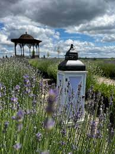

О содержании лаванды.
Единственное, что от вас действительно требуется – это взрыхление грунта вблизи растения, а также поливы, когда земля пересыхает. Со временем вы самостоятельно выработаете идеальный график увлажнений. Для поддержания декоративности, кустик придется периодически подрезать, освобождая растение от высохших или чрезмерно прогрессивных побегов. Периодически, особенно, если вы являетесь обладателем неплодородного грунта, рекомендуется использование удобрений. Перегнившая листва и компост – лучшее средство для обогащения земли. Но следите за тем, чтобы сам ствол лаванды оставался открытым, удобрение кладется только на землю рядом с растением. При правильном уходе проблемы с вредителями не возникнут.
